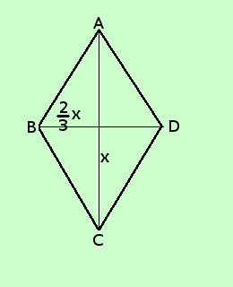

|
sviluppo Risolvere il seguente problema Determinare l'area di un rombo sapendo che una diagonale e' 2/3 dell'altra e che la loro differenza vale 8 cm. ipotesi: la figura e' un rombo una diagonale e' 2/3 dell'altra la differenza fra le diagonali vale 8 cm tesi: trovare l'area (diagonale maggiore per diagonale minore diviso 2)  lunghezza diagonale maggiore (AC) = x
Per trovare l'area devo trovare le misure delle diagonali; so che la loro differenza vale 8 cm, quindi scrivo AC - BD = 8 sostituisco ad AC e BD il loro valore
sommo
moltiplico per 3 per eliminare i denominatori (2° principio) x = 24 lunghezza diagonale maggiore (AC) = x = 24 cm
Area Rombo = AC·BD : 2 = 24 ·16 : 2= 384cm2 : 2 = 192 cm2 |